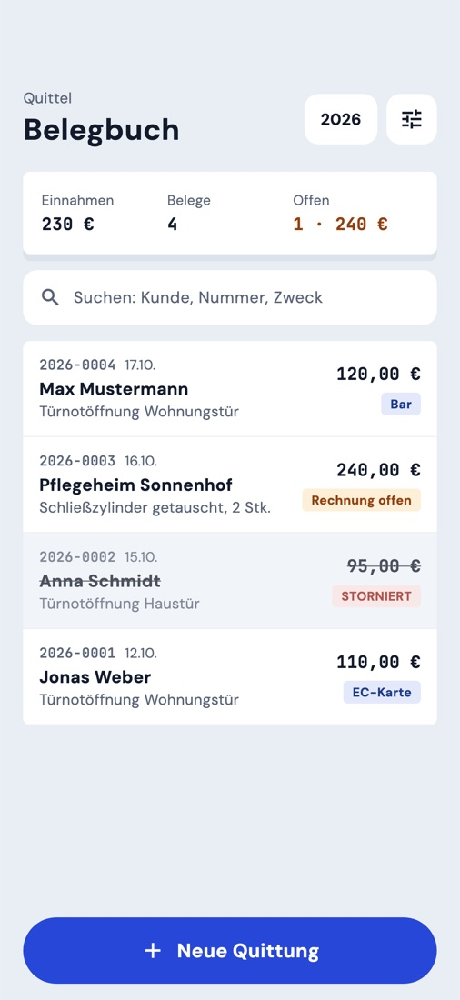
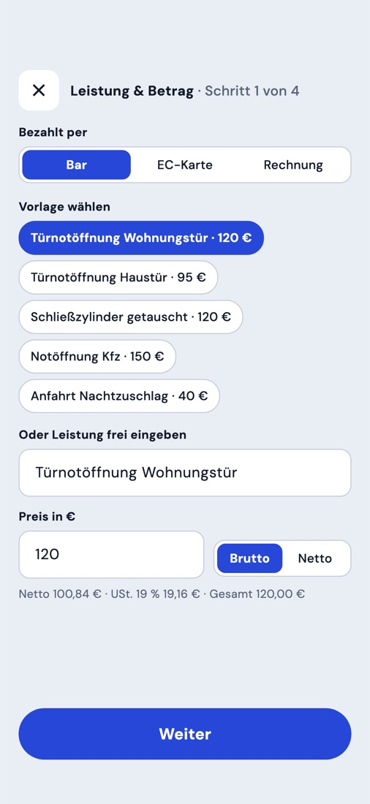
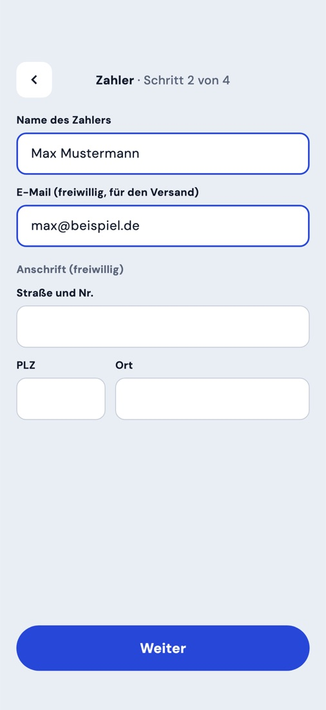
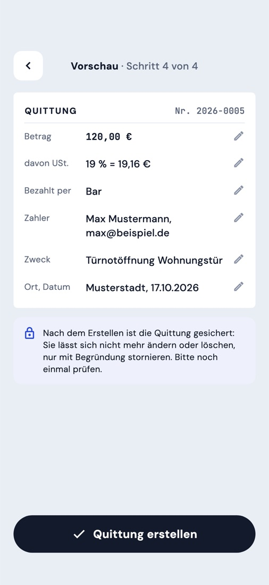

Die Quittung
fürs Telefon.
Schluss mit dem Quittungsblock: Mit Quittel erstellst du Quittungen und Auftragsbelege direkt auf dem iPhone, lässt sie unterschreiben und schickst sie als PDF per E-Mail – in unter einer Minute.

Alles, was ein Quittungsblock kann – und mehr
Gemacht für Handwerker, Dienstleister und alle, die vor Ort kassieren.
Vorlagen mit Preis
Häufige Leistungen einmal anlegen. Ein Tipp – Leistung und Betrag stehen drin.
Bar, EC-Karte oder Rechnung
Netto, Umsatzsteuer und Gesamt werden automatisch berechnet. Auch für Kleinunternehmer.
Unterschrift & Stempel
Deine Unterschrift und dein Firmenstempel kommen automatisch auf jeden Beleg.
Per E-Mail verschicken
Der Beleg geht als PDF direkt an deinen Kunden – mit Apple Mail oder deiner Lieblings-Mail-App.
Fortlaufend nummeriert
Lückenlose Belegnummern. Belege lassen sich nicht nachträglich ändern, nur mit Begründung stornieren.
Fertig für den Steuerberater
Jahresübersicht als PDF und CSV-Datei mit einem Tipp.
So einfach geht's
Vier kurze Schritte, alles auf einer Seite pro Schritt.



Deine Daten bleiben bei dir
Kein Konto, keine Cloud, kein Tracking, keine Werbung.
Nur auf deinem iPhone
Alle Belege werden ausschließlich auf deinem Gerät gespeichert und durch die iPhone-Verschlüsselung geschützt.
Datensicherung inklusive
Mit einem Tipp sicherst du alle Belege als Datei – und holst sie auf einem neuen iPhone zurück.
Mit Prüfsumme gesichert
Jeder Beleg erhält eine Prüfsumme. So siehst du sofort, ob ein Beleg verändert wurde.
Fairer Preis. Kein Abo.
Erst ausprobieren, dann entscheiden.
Testphase
30 Tage alle Funktionen kostenlos.
- Endet von selbst
- Keine automatische Abbuchung
Vollversion
Einmalig. Für immer.
- Unbegrenzt Belege
- Keine Werbung, kein Abo
- Auch auf einem neuen iPhone
Häufige Fragen
Deine Frage ist nicht dabei? Schreib uns: quittelquittung@gmail.com
Was passiert nach den 30 Tagen?
Du kannst keine neuen Belege mehr erstellen, bis du die Vollversion für einmalig 4,99 € freischaltest. Alle bisherigen Belege bleiben sichtbar und lassen sich weiter teilen, versenden und exportieren.
Brauche ich ein Konto oder Internet?
Nein. Quittel funktioniert ohne Konto und ohne Internet. Internet brauchst du nur zum Versenden per E-Mail und für den Kauf im App Store.
Kann ich einen Beleg nachträglich ändern?
Nein, das ist Absicht: Erstellte Belege sind gesichert. Bei einem Fehler stornierst du den Beleg mit Begründung – er bleibt durchgestrichen sichtbar, die Nummer bleibt belegt.
Was ist ein Auftragsbeleg?
Wenn dein Kunde nicht sofort zahlt, dokumentiert Quittel den Auftrag mit Rechnungsempfänger und Auftraggeber. Die Rechnung schreibst du wie gewohnt (z. B. mit SumUp) und trägst später die Rechnungsnummer ein, sobald bezahlt wurde.
Was passiert, wenn ich ein neues iPhone bekomme?
Mit einem iPhone-Backup ziehen deine Belege automatisch mit um. Alternativ sicherst du sie in Quittel unter „Datensicherung“ und spielst sie auf dem neuen iPhone wieder ein. Deinen Kauf stellst du mit „Kauf wiederherstellen“ wieder her.
Ersetzt Quittel meinen Steuerberater?
Nein. Quittel ist ein Hilfsmittel zum Erstellen und Aufbewahren von Belegen. Für steuerliche Fragen wende dich bitte an deinen Steuerberater.